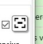

Las calles nos unen: Seguridad vial en la sociedad
Explora el libro digital “Las calles nos unen: Seguridad vial en la sociedad”.
Objetivo: Concluir generalizaciones sobre la evolución histórica del tránsito y la seguridad vial, diferenciando las representaciones de los roles de género en la cultura vial del pasado y del presente, con el fin de fomentar una conciencia crítica y promover la responsabilidad colectiva.
A través de su lectura, comprenderás que la seguridad vial no es solo un conjunto de normas, sino una construcción social que expresa valores, acuerdos y transformaciones históricas en nuestra forma de convivir en el espacio público.
*Nota: utilizar la opción pantalla completa para visualizar mejor el contenido del libro---> 
💡 Mientras avanzas por cada parte del libro, reflexiona y responde:
- ¿Por qué la educación vial puede considerarse una responsabilidad colectiva y no solo individual?
- ¿Cómo fueron cambiando los roles de varones y mujeres en la historia del tránsito y la conducción?
- ¿Qué ejemplos actuales muestran avances en la igualdad y el respeto en la convivencia vial?
- ¿Qué relación existe entre el Modelo Formoseño, la Justicia Social y la Convivencia Vial?
📝 Actividad:
Escribe una breve reflexión (5 a 8 líneas) en tu cuaderno o en un documento digital sobre cómo la historia nos ayuda a comprender y mejorar nuestra convivencia vial hoy.
Si trabajas en plataforma (como Moodle), compartí tu reflexión en el espacio de comentarios o foro del aula.